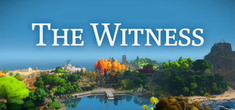

This is the summuary of my research paper for IGME 110
When people are talking about today’s video games, they are always impressed by its graphic performance or other tech improvements. Indeed, video game has grown a lot. From ‘Pong’ to the next generation games like ‘Cyberpunk 2077’, seems like video game still has infinite potential to develop. Some developers even already to step in to the VR video game field, to combine video games with the most recent technology. But sometimes I ask myself, are we running too fast? In my mind, video game is always a type of art. It is the harmonious combination of literature, graphic and sound. But what makes it my faith is, it allows its audience to interact with it. Unlike standalone music, literature and art, once the artist finished them, they are already complete. But video games are different. A video game can’t tell a complete story until a player finish it, and the story varies with decisions the player made. It is beautiful. It provides the best immersive experience then any other kind of art. The games which gives our the most touching feelings however, is not those game which use the latest technologies. Yes, 3A games like Assassin’s Creed or Mass Effect series, they indeed have a strong plot to make players sink in it, but they are not life-changing games even they need 50GB in your SSD. But what about Undertale? This indie 100MB game provide one of the best emotion roller coaster experience. Plot? To the Moon and Finding Paradise tells you two stories will completely change some of your views of life. Concept? Johnathan Blow’s The Witness proved that video game is unique to any other art type. It could accurately transfer a very abstract information which couldn’t describe in words to players. Gameplay? Literally millions of indie games or games created at a game jam have more interesting mind-blowing game mechanics then 3A games, and Minecraft is also a indie game. Yes I know actually compare those games with 3A games is kind of unfair because most of indie games go extreme in some ways, and 3A games want everyone to enjoy it so it has a better overall performance. But what I wanted to state here is there are still so many beautiful potentials of video game waiting to be discovered. Comparing to hardware improvement, we should working on how to improve the reputation of video game more. In my home country China, video games was called ‘Electronic Heroin’ for over a decade. And Trump still blame gun shot crime on video games today. Hardware improvement cannot make most people respect video games, but game content can. Maybe its time for us to slow our steps and take a decent look at what we could achieve in today’s devices.
